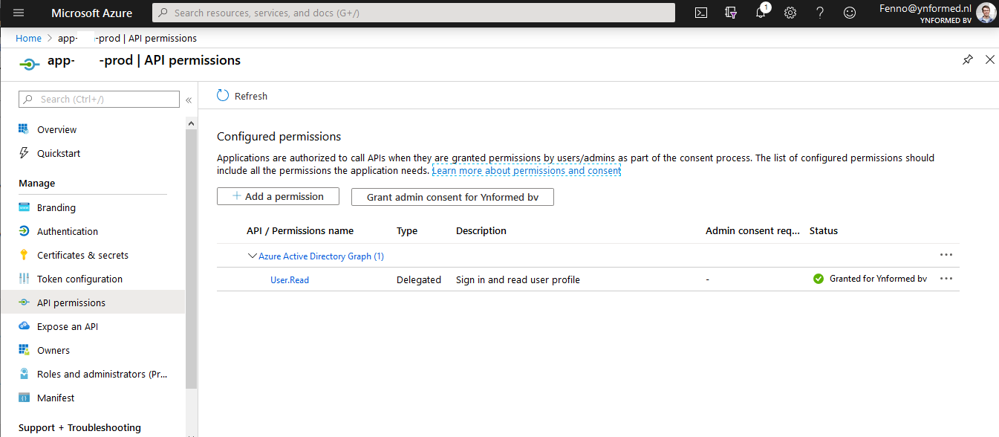

Fenno Vermeij, April 11, 2020
Over the last months and years, I have helped maintaining an infrastructure of shiny apps that me and my colleagues have created. First as plain R apps using shiny-server, then moving them to Docker images, using shinyproxy to orchestrate the serving of containers. Recently, we decided to move our infrastructure to Azure. This has several advantages:
While we are not completely finished with the migration, it is mostly done, and all the code/templates are written. In this blog I want to highlight the issues I ran into, hopefully to prevent anyone other than myself from wasting time on these issues.
When working with a container registry, you don't want data to enter the image, since anyone we can access the registry, can download the data in the image. Previously, we handled this by only giving sysadmins access to the registry, but that caused more work for us.
In Azure App Service, Linux containers can have path mappings. This allows us to create an Azure File Share, and mount it to the App Service. Then, we give only the relevant person access to this file share, and let them upload their data to that share. The share is mounted to /data or some other folder, where the programmer can then access it with their app.
Here is an example of creating this path mapping with the AZ CLI. Unfortunately this feature is still in preview, so as far as I know, it is not supported in ARM templates yet.
1 2 3 4 5 6 7 8 9 10 11 | |
Unfortunately, when enabling AAD authentication, the shiny apps stopped working. This is because Azure inserts some middleware, easyauth, in between the user and the app when enabling AAD authentication. Unfortunately, this middleware inserts some headers that don't play nice with the package used in shiny for webtraffic: httpuv.
This is the kind of issue that took me a few hours to debug: first I tried mindless googling, that didn't work, so I had to trace the issue exactly, and once I finally figured out where the issue lied, I remember one single, perfectly placed google search leading me to the stackoverflow post with the solution, here. Thanks lhaferkamp!
The issue ended up being a bug in httpuv version 1.5.2 and prior.
For now, the most recent version on CRAN is 1.5.2, so in our Dockerfile, we have to install a development version of httpuv using RUN R -e "devtools::install_github('rstudio/httpuv')". Once version 1.5.3 is released, we can remove that hack.
This manifested itself in a public shiny app working, but a private shiny app just showing some blank or non-functional page. Inspecting the console revealed that the page 'quit' after attempting to setup a websocket connection. After some googling, I found this page on the Azure feedback forum where somebody mentioned websockets aren't supported with AAD Authentication on, and asked for this to be added... a year ago. There is no response on this issue yet, so I don't expect this to fixed soon. Luckily, we can disable websockets in shiny, by using shiny-server in our docker image!
Basically, we enforced everyone to use the rocker/shiny-verse base image, which is an image that comes with tidyverse, shiny, shiny-server. These are requirements for basically every shiny app, and the last of the three allows us to use websockets. We add a shiny-server.conf file like this:
run_as shiny;
server {
listen 80 0.0.0.0;
# This configuration makes sure that shiny_server works if websockets are disabled
disable_protocols websocket;
location / {
app_dir /app;
log_dir /var/log/shiny-server;
}
}
Remember, we can add this file with something like COPY shiny-server.conf /etc/shiny-server/shiny-server.conf. That will make sure websockets are disabled.
When enabling authentication, you will have to create 2 resources in the Azure Active Directory: an enterprise app, which handles the actual connection to the app, including the login/logout urls, and the service principal, which has the list of users that are allowed to access the app. The service principal is relatively straightforward, and I didn't have any issues with it. However, the enterprise app has some specific settings that tripped me up.
First of all, the authentication settings. Mostly, the default settings do fine, but remember you only have to enable 'ID tokens' as an implicit grant. If you turn this option off, the app won't work. If you turn 'Access tokens' on, the app will still work, but there's not much point.
Also, just set the account type to single tenant. Either it's a public app, which means anyone can access it without logging in, or it's a single-tenant app, which means you, and your customers (read: guest users) can log in. Multitenant has it's uses, but it's more difficult to configure, so I reccommend just sticking with single tenant if it suits your need.

Second of all, the permissions. Don't get tripped up, User.Read is all you need. For guest users, you need to give admin consent so they don't get an error saying they aren't allowed to give consent. This can be done in AZ CLI like this:
1 2 3 4 | |
Beware you do need to have the role of 'Application administrator' to do this.

Lastly, a quick tip on enabling https with a custom domain. I definitely reccommend creating an app service domain in Azure, that lets you manage your DNS records automatically. This saves a lot of manual labor setting CNAME records. In an ARM template, we can configure a CNAME record something like this:
1 2 3 4 5 6 7 8 9 10 11 12 13 14 | |
Then, you don't need to mess around with wildcard certificates to enable https on your App Service. We can automatically create what's called an 'App Service Managed Certificate', another preview feature which was one of the reasons for switching to Azure: all this stuff just seems to go automatically in Azure. The only thing Azure needs is for the CNAME record to be set, proving you own the domain.

The ARM template for this is quite complex, but I plan on making it open source soon.
Hopefully this shows off some of the features and obstacles you can encounter when deploying a (shiny) app in Azure. Let's just say, some of these issues took a few hours to solve, so if this can save one person the same hassle, I would be very happy.